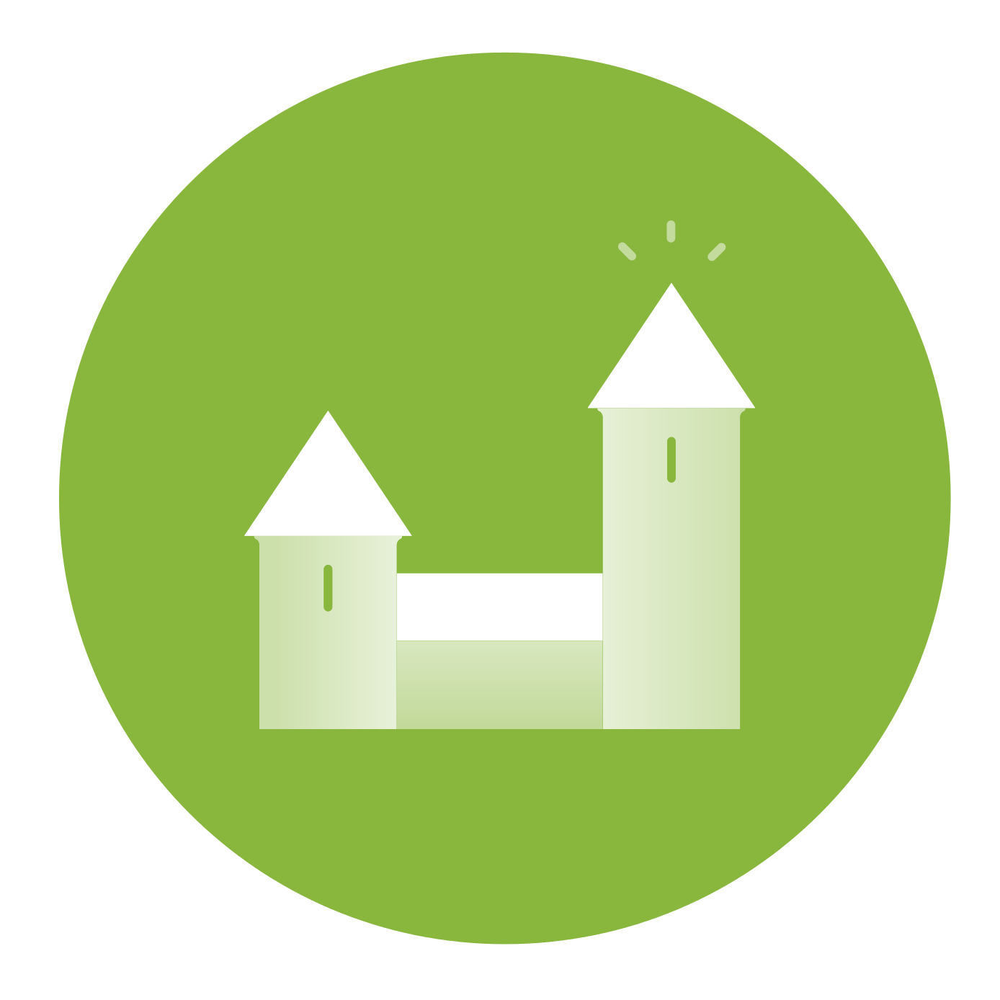

“When it comes to work it is increasingly difficult to reconcile making money with making sense. People do work to make a living. Others do work to make meaning. But the two works are not the same work.”

The Story of unMonastery
The unMonastery is a social clinic for the future. It is a place-based social innovation is aimed at addressing the interlinked needs of empty space, unemployment and depleting social services by embedding committed, skilled individuals within communities that could benefit from their presence.
It is a non-profit project that aims to challenge existing dependency chains and economic fictions, developed in collaboration with EdgeRyders LBG over the course of 18 months. Edgeryders started out as a project by the Council of Europe and the European Commission, which after termination developed into an international, community-run social enterprise.
The first unMonastery opened its doors February 2014 in Matera, Italy. Working with Matera2019, the prototype hosted projects including CoderDojo Matera, Mapping the Commons, and unTransit, an app to follow the city's transport system in real-time. Greater details on projects, people, and the community involved in the prototype are available on the unMonastery Matera site.
unMonastery activies are currently based in Athens, Greece working to support autonomous initiatives around appropriate technology, open workshops, and collective kitchens, while continuing to develop the unMonastery model and BIOS toolkit. To facilitate the launch of the unMonastery BIOS, we are planning an unSummit later this fall in Nottingham, UK to regather and connect all those involved in the unMonastery organisation and aligned networks around the question of the future(s) of living together.
Spaces
Established
In progress
Suggested
In progress
Suggested

The unMonastery BIOS
A toolkit for starting new unMonasteries and evaluating projects throughout their development, designed on the principle that all knowledge generated by the unMonastery should always open to all, easily accessible and applicable to other initiatives. The unMonastery Bios encompasses the entire knowledge base generated as a result of the 6 month prototype in Matera, Italy during 2014 and is continually updated with further development work.
Follow the beginning and ongoing development of unMonastery on the EdgeRyders platform, a distributed think-tank of citizen experts.
Cards designed with MethodKit to help unMonasterians work together, nurture ideas, and get an overview of common questions.
The Book of Greater and Lesser Omissions
The initial unMonastery prototype in Matera has provided abundant raw material. unMoaners are not at all documentation-shy: chat sessions, post-its, a web presence, project proposals and urgent emails have left behind a maze of commentary. The Book of Mistakes recycles this maze into distilled clarity. Fragments of argument and trampled shards of vision are reassembled into magnificent vessels of wisdom.
The Book of Mistakes reveals its message on several levels. It can be read from beginning to end, although it clearly was not written in this direction.